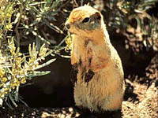
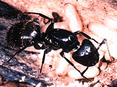
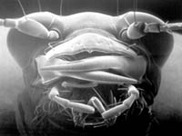
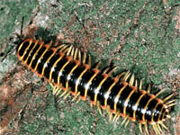
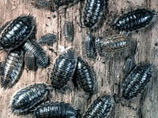
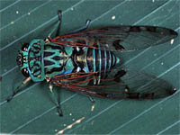
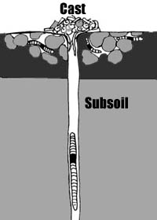
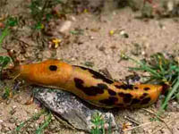

|
|
|
|
Members of the macrofauna group of soil animals include:
Vertebrates - mainly burrowing animals (gophers, mice, ground squirrels) Arthropods - insects Annelida - earthworms Mollusca - slugs and snails These animals provide a valuable service in mixing the soil and decomposing some of the crop litter. Many farmers and homeowners, however, see some of the burrowing animals as pests and attempt to destroy them. While burrowing animals damage some crops, they also aerate the soil as they dig. These mammals add nutrients to the soil with their wastes, and some, such as the 13-lined Ground Squirrel, help crops by eating harmful insects and weed seeds. Soil macrofauna form part of the food web being important food sources for the higher predators such as birds of prey, wolves and coyotes. Insects and worms are very important in converting crop residues to soil organic matter which is rich in nutrients.
Vertebrates The most important vertebrates in soils are the burrowing mammals. The world of soil provides these animals with shelter from their enemies and from extreme changes in climate. Burrowing animals such as ground squirrels, prairie dogs, and badgers are important to the soil. As they dig tunnels and burrows, they loosen the soil, making larger pore spaces for air and water. |
|||
 Prairie Dogs are larger than more common gophers. They occupy fairly large amounts of land in communities known as towns. Animals such as these are important to the prairie soil community because they contribute to the development of healthy soils. Pocket Gophers are another prairie mammal that digs burrows. They are often mistaken for moles because of the large piles of dirt they leave on the surface. Pocket gophers have large claws and teeth for digging, and they are able to close their mouths behind their front teeth, allowing them to dig without swallowing the soil.
The Richardson Ground Squirrel is one of the most common burrowing animals found on the Prairies. The Richardson ground squirrel lives mostly on the grasslands, often near green vegetation and water. It digs burrows that have several openings. Another ground squirrel found on the Prairies is the 13-lined ground squirrel. It is a smaller animal, and has distinctive lines on its back. The 13-lined ground squirrel also digs burrows, although it often hides the openings, making them harder to find. Arthropods | |||
 The Ant Have you ever watched several ants march along the same trail, and wondered how they know where they are going? Ants leave chemical clues along the ground to mark their way to and from their nest. Ants live in the soil and depend on other organisms for their food and search for food on flowers. Ant nests can be found in some gardens by lifting rocks or bricks. Colonies of thousands move soil and build tunnels. Ants contribute to soil-building and add organic matter to the soil. They are scavengers, recycling dead matter. At the beginning of their adult life, most ants have wings and in fact belong to the same family (Hymenoptera) as bees and wasps. The mating of winged male and female ants takes place during flight, after which the male dies. The female returns to the ground, removes her wings either by rubbing or biting them off, and proceeds to start a new colony. Some female ants have been known to lay fertilized eggs throughout a period of 15 years, after mating only once. | |||
 Beetles One of the more conspicuous members of the soil society is the beetle. This group of insects has hard outer wings which help protect them from predators. There are several types of beetles that live in the ground. Ground beetles and tiger beetles help to mix the soil and they contribute to the organic matter content of the soil. Certain species of ground beetles have never seen light. They live in small pockets in the soil and never come to the surface. Many ground beetles however, live amongst the leaf litter. Adult ground beetles are carnivorous. They attack springtails, earthworms, snails and various other inhabitants of the topsoil. When hunting, ground beetles remain perfectly still and wait for potential "meals" to move into attacking range. Although quite common, you must be quick to see either the larva or the adult of the tiger beetle. The larvae, which live in burrows in the soil, retreat at the slightest vibration in the ground. Adult tiger beetles has long slender legs which help them move extremely fast along the ground. Tiger beetles are meat eaters in both life stages. Take a look at that ferocious head in the image! The larvae sit quietly in their burrows and are ready to seize insects as they crawl close to the openings of their holes. When the soil become dry, tiger beetles plug the openings of their burrows to prevent their bodies from drying out. | |||
 Centipedes and Millipedes Centipedes and millipedes differ from one another in their eating habits. Centipedes have a large set of poison claws just below the mouth, which make them efficient meat eaters. Millipedes are vegetarians. They usually prefer rotting plant material to flesh. Their bodies act like little grinding machines, that break up a great deal of the soil litter layer. Their eating habits help to increase the organic content of the soil. Both centipedes and millipedes have curious methods of defense. When attacked and held by a leg or two, the centipede simply releases the legs. They continue to vibrate when they are not attached to the body. This adaption diverts the predator's attention while the centipede escapes serious harm. When a hungry predator, like a toad or spider, approaches a millipede, it simply rolls into a spiral -- legs to the inside, hard shell to the outside. But, the greatest adaptation for the millipede is its terrible taste caused by stink glands -- its ultimate weapon of defense. Although millipedes have more legs (two pairs per body segment) than centipedes (one pair per body segment), they move considerably slower. | |||
 The Sow Bug The sow bug (also called the wood louse or pill bug) is a relative to both the freshwater crayfish and saltwater lobster. You can find them under stones, boards, rotting wood, and other damp dark places. Sow bugs cannot live if exposed to direct sunlight, even if for a short period of time.
A sow bug can roll itself up in its protective shell to protect itself from predators and dry conditions. When rolled up, it resembles a pill, hence the name "pill bug". Sow bugs play an important role in chewing up plant material and mixing material in the top layer of soil. | |||
 The Cricket and Cicada Crickets and cicadas are two other arthropods (in addition to beetles) which inhabit the soil. Crickets are efficient diggers. In fact, mole crickets get their name from their front legs which resemble those of a mole. They are adapted for digging, and are strong and curved outward. These types of insects help mix the soil. Mole crickets feed on the roots of plants. They live in small tunnels beneath the surface of the soil where they spend most of their lives. At night, the males sing by rubbing their first pair of wings together. the sound closely resembles the distant quacking of ducks!
Cicadas spend most of their life in the soil. They live anywhere from four to twenty years as nymphs underground, where they feed on juices from the roots of plants. When ready, cicada nymphs dig to the surface, and climb some sturdy object such as the trunk of a tree. Their skin splits down the back and the winged adult emerges. On a hot summer day, you may have heard the piercing buzz of the male cicada. This is a mating signal to attract females, which are silent. In wet weather, cicada nymphs have been known to build small towers over their exit holes apparently in an attempt to overcome excess moisture. As with the cricket, they aid in the mixing of the soil. Annelida | |||
 The Earthworm Earthworms belong to the group of segmented worms. As underground engineers, they eat their way through the soil. The 'meal' passes through the entire length of their body. The excrement of worm casts they deposit help create a more fertile soil. As a result of their eating habits, earthworms create a complex network of underground tunnels, which help air and water circulate through the soil to plant roots and other living organisms. Adult earthworms are only about ten centimetres long, but a colony of them can completely turn over the top ten centimetres of soil in just a few years. Earthworms spend most of their lives underground where they make burrows that can penetrate deeply into the soil. In the winter, earthworms retreat to deep below the frost line, to avoid the killing cold. In spring, these soil-builders emerge. You can usually see worms when you turn over the soil in your garden. Underground, the earthworm builds burrows that have smooth walls cemented together with mucus and other excretions. Although some burrows have been found more than a metre underground, most are near the surface where they serve as passage for air and water. The burrows also help loosen the soil, making it easier for plant roots to grow in that area. Earthworms breathe through their skin so after a heavy rain, you will see these worms emerging from their homes. If they did not come to the surface in the rain they would suffocate. Earthworms feed on dead and decaying plants on or near the surface of the soil. This material is digested and later left behind as a ground-up mulch. In this way, earthworms add organic matter to the soil, making it more available to smaller organisms and plants. If you put an earthworm on a piece of paper, you will hear scratching sounds as it moves. Earthworms crawl with the aid of tiny, paired still hairs on their skin, much like the bristles on the end of a broom. These hairs found on almost every segment of the worm's body are called setae. The setae help the earthworm to grip and move through the soil. An earthworm's life is full of danger. Worms are hunted by robins, gulls, owls, and even snakes and foxes. Moles and shrews are other predators. Earthworms have no eyes or ears but they do have very sensitive skin, which warns them of predators nearby. When an earthworm senses movement nearby it moves away from the source of the vibrations. The blue-coloured end of the earthworm contains its most important organs, including its brain, heart, and reproductive organs. Humans create hazards for earthworms, too. When people cultivate the soil they expose earthworms to predators and disturb their feeding and breeding areas. The prairie climate is not ideal for earthworms. They must burrow deep into the soil to avoid winter cold and summer heat. In very dry areas, there are few or no earthworms. In fact, earthworms are not a natural part of the prairie environment. They arrived on the Prairies with settlers who brought plants from Europe, or sometimes they were brought by gardeners who knew the worms were good soil-builders. Earthworms on the Prairies are found mostly in urban areas, in gardens, parks, and golf courses. Earthworms are important soil-builders in the areas where they now live, but in most parts of the Prairies other organisms play this role. Worm-like creatures called nematodes, and various kinds of beetles tunnel through the topsoil, churning and aerating the soil, improving drainage, consuming dead organic matter, and providing food for larger consumers.
Mollusca
| |||
 Snails and Slugs The snail and slug are two specially adapted soil dwellers. They feed on plant material and help to ad organic matter to the soil. Both snails and slugs have a soft upper body resting on a singular muscular foot that runs their entire length. A gland near the front edge of the foot secretes a slime that lubricates the foot and prevents its delicate surface from being torn. Snails and slugs can move at speeds of over 30 cm per hour. At this rate, it would take a snail over 170 years to travel from Toronto to Ottawa! Slugs and snails are sensitive to light and
sound, and have a well-developed sense of smell. They also have
long sensory tentacles at the front of their body, which are used similar
to the way a blind person uses a white cane.The snail's shell in his home, defense against
predators, and protection from adverse environmental conditions
such as drought. When winter approaches, snails withdraw into
their shells, seal the open end with fast-drying mucus, and await the return of warm weather. Instead of using a shell for protection, slugs are covered with a slimy substance which allows them to crawl under litter and stones and into small cracks in the soil. Slugs are considered pests in some gardens as they chew plant material, effectively killing the plant. Slime trails of slugs may be seen in an infested flower bed. Although no one can say that a slug is pretty, some are quite colorful like this Banana slug from the forests of British Columbia.
| |||
| |||